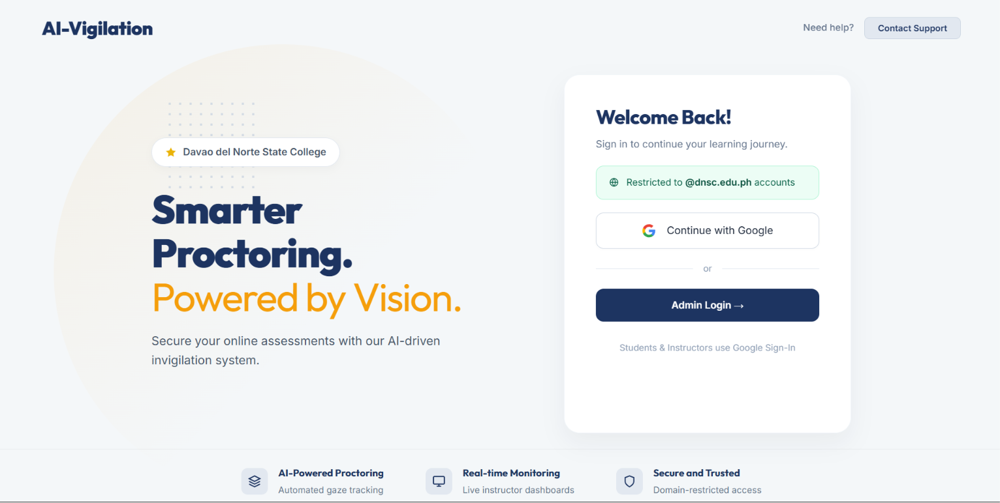
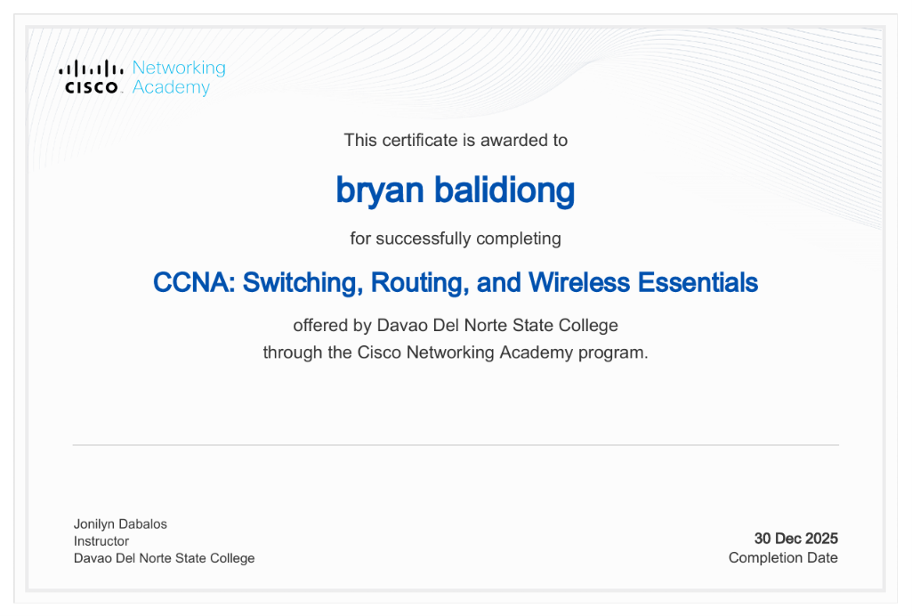

TURO
A localized services platform designed to connect tutors, job seekers, and clients. Developed as a startup project and shown at the DNSC startup competition.
ReactJavaScriptVercel
View live project Aspiring Front-End Developer
I build web experiences that are clear, useful, and easy to use. Through school and independent projects, I have worked on a services platform, a mobile hiring app, and an online exam proctoring concept.
 Fourth-year BSIT student
Fourth-year BSIT studentI am a fourth-year Bachelor of Science in Information Technology student at Davao del Norte State College. I am most interested in front-end development, responsive interfaces, and turning a project idea into something people can actually use.
Bachelor of Science in Information Technology
Humanities and Social Sciences (HUMSS) strand.
A localized services platform designed to connect tutors, job seekers, and clients. Developed as a startup project and shown at the DNSC startup competition.

A mobile app concept for finding work and connecting employers with workers. The project explores job discovery and a straightforward hiring experience.

An online exam proctoring concept that explores how AI could assist with monitoring remote exam sessions.

Recognition for the TURO application startup project.

Cisco Networking Academy · July 2025

Cisco Networking Academy · December 2025